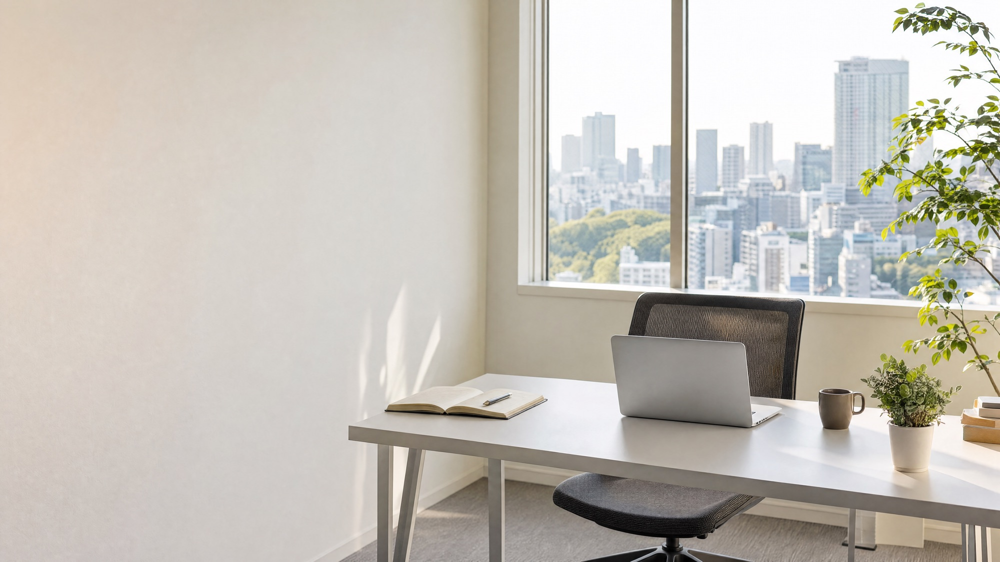
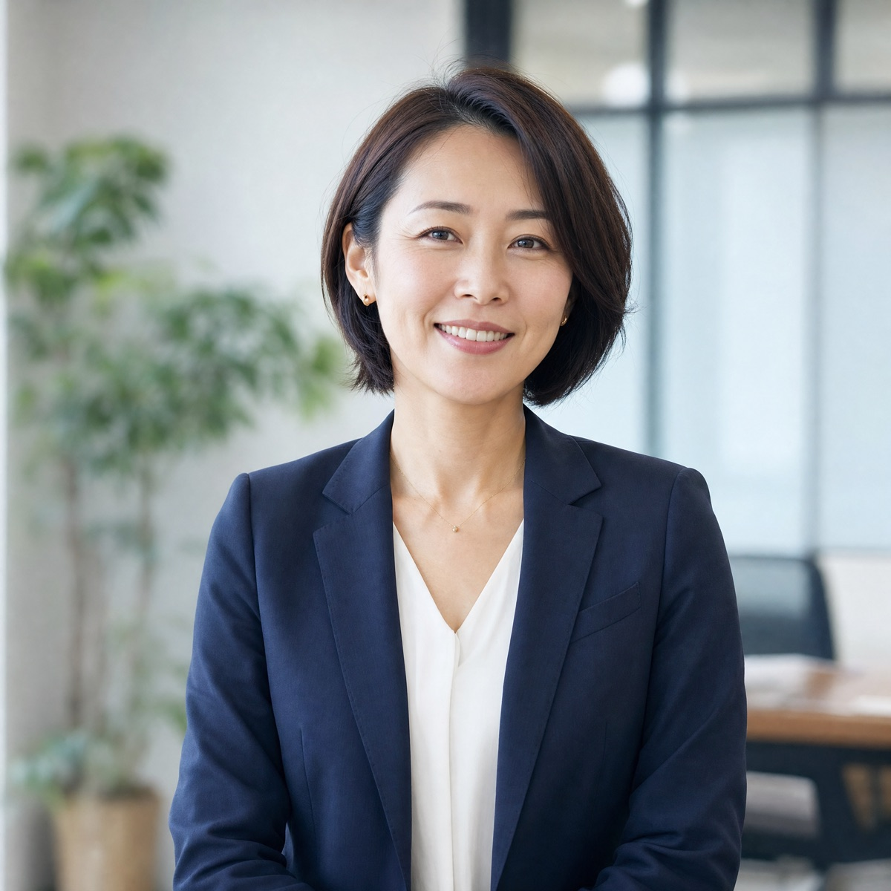

集客・商品づくり・日々の業務を、ひとり社長でも続けられる形に整える伴走型のコンサルティングです。

紹介が止まると、売上も止まる
新しいお客さんと出会う方法が、紹介と知り合いだけになっている。
毎日忙しいのに、利益が残らない
単価が低いまま、作業時間だけが増えている。
何から手をつけるか決められない
SNSも広告もAIも気になるけれど、全部を試す時間はない。
やることを絞り、毎週の打ち合わせで「次の1週間にやること」を決めていきます。
あなたのお客さんがどこにいて、何を見て問い合わせるのかを整理し、ホームページとSNSの流れを設計します。
今の商品を「誰の・何を・どこまで解決するか」で組み直し、無理なく単価を上げる方法を一緒に考えます。
見積もり・請求・日程調整など、毎週くり返す作業を洗い出し、ツールやAIで手間を減らします。
契約から6か月時点の平均です。

地方銀行で中小企業の融資と経営相談を担当したあと、独立しました。数字を見るだけで終わらず、「明日から何をするか」まで一緒に決めるのが私のやり方です。ひとりで会社を回す大変さは、自分自身がいちばんよく知っています。
ホームページの文章を一緒に直しただけで、検索からの問い合わせが来るようになりました。毎週やることが決まっているので、迷わずに進められます。
値上げが怖くて何年も同じ価格でした。商品を3つのプランに分けたら、半分以上の方が上のプランを選んでくれました。
すべて税込・月額です。最低契約期間は3か月です。
まず1回、今の課題を整理したい方に。
集客・商品・仕組み化を、毎週の打ち合わせで進めます。
ホームページや資料の作成まで、手を動かして進めたい方に。
フォームから、ご都合のよい日時を選んでください。
今のお悩みと目標をお聞きし、進め方をご提案します。
無理にすすめることはありません。持ち帰って検討できます。
最初の打ち合わせで、3か月のゴールを決めます。
はい。開業1年目の方のご相談も多く、今の規模に合わせてやることを絞ります。
すべてZoomで完結します。ご希望があれば、都内での対面にも対応します。
大丈夫です。使う時は、画面を見ながら一緒に設定します。
こちらから何度もご連絡することはありません。ご検討の結果をお待ちします。